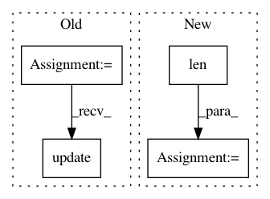

aec6216f3d6540baaa5b0bb9badca5a00f84b74d,perfkitbenchmarker/linux_packages/ycsb.py,YCSBExecutor,RunStaircaseLoads,#YCSBExecutor#Any#Any#,1092
Before Change
events.record_event.send(
type(self).__name__, event="run", start_timestamp=start,
end_timestamp=time.time(), metadata=copy.deepcopy(parameters))
client_meta = workload_meta.copy()
client_meta.update(parameters)
client_meta.update(clients=len(vms) * client_count,
threads_per_client_vm=client_count)
if FLAGS.ycsb_include_individual_results and len(results) > 1:
for i, result in enumerate(results):
all_results.extend(_CreateSamples(
After Change
all_results.extend(run_samples)
is_sustained = False
while FLAGS.ycsb_dynamic_load:
actual_throughput, run_samples = _DoRunStairCaseLoad(
client_count,
target_throughput // len(vms),
workload_meta,
is_sustained)
is_sustained = FLAGS.ycsb_dynamic_load_sustain_throughput_ratio < (
actual_throughput / target_throughput)
for s in run_samples:
s.metadata["sustained"] = is_sustained
In pattern: SUPERPATTERN
Frequency: 5
Non-data size: 4
Instances
Project Name: GoogleCloudPlatform/PerfKitBenchmarker
Commit Name: aec6216f3d6540baaa5b0bb9badca5a00f84b74d
Time: 2020-08-10
Author: yuyanting@google.com
File Name: perfkitbenchmarker/linux_packages/ycsb.py
Class Name: YCSBExecutor
Method Name: RunStaircaseLoads
Project Name: bearpaw/pytorch-pose
Commit Name: dc9a7266ed6693f9a835ab411f85fa56e77065a8
Time: 2017-06-14
Author: platero.yang@gmail.com
File Name: example/mpii.py
Class Name:
Method Name: train
Project Name: haotianteng/Chiron
Commit Name: 27603242efc13867b6230d377732e7dce7e4c7a0
Time: 2018-08-21
Author: havens.teng@gmail.com
File Name: chiron/chiron_eval.py
Class Name:
Method Name: evaluation
Project Name: keras-team/keras
Commit Name: c3e844e7063efc14f6a8364cc04df4526b57352e
Time: 2018-01-11
Author: ozabluda@gmail.com
File Name: tests/keras/utils/generic_utils_test.py
Class Name:
Method Name: test_progbar
Project Name: PetrochukM/PyTorch-NLP
Commit Name: 44f80b5872b1bb9679d15b8230c1731fd26ac527
Time: 2018-03-10
Author: petrochukm@gmail.com
File Name: torchnlp/text_encoders/static_tokenizer_encoder.py
Class Name: StaticTokenizerEncoder
Method Name: __init__